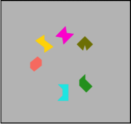

Change detection tasks are very popular in cognitive psychology, especially among working memory researchers. In these tasks participants must remember an array of objects (e.g. colored squares, faces, abstract shapes) to make a “same” or “change” decision following a brief delay. Usually memory is either probed with a single item (which was either in the initial study set or not) or with a whole display containing the same number of objects, and the task is to decide whether any (usually 1) have changed. There are more complicated versions of this general task; in the example below, observers must retain the conjunction of color and shape in order to detect the change (see, e.g., Rhodes et al., 2017).

These tasks are popular as there are simple multinomial models that allow researchers to estimate the (average) number of items an individual could remember across a series of trials (often referred to as k; see Pashler, 1988, Cowan, 2001, Rouder et al., 2011). However, for the estimate to be accurate we need a reasonable idea of how people use information (i.e. the items stored in working memory) and the constraints on this information use imposed by the task (see Rouder et al., 2011 for more discussion of this).
Nelson Cowan, Kyle Hardman, Robert Logie and I recently looked at how observers use the constraints of change detection tasks to guide guessing behavior. Our results suggest that people utilize more information than current models for estimating k assume. More information on this can be found in the paper which is now out at JEP:LMC and the JAGS code that I wrote to implement these models can be found here.